KOCAELİ
Kocaeli, Marmara bölgesinde yer alan, doğusunda Sakarya,batısında İstanbul ve Yalova ,güneyinde Bursa ve Bilecik olan hem Marmara hem de Karadenize kıyısı olan bir sanayi şehiridir.
Nüfus:2.130.006
Şehirin nüfusu çoğunlukla sanayi bölgesi olan ilçelerin yanındaki bölgelerde yoğunlaşmaktadır.Fabrikaların bulunduğu Dilovası bölgesi 54 binlik nüfusu ile neredeyse sonuncu iken hemen batısındaki gebze 407 binlik nüfusu ile Kocaelinin en kalabalık ilçesidir.
 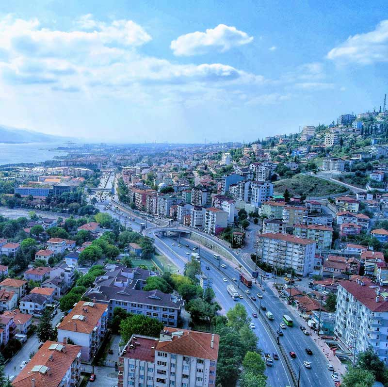
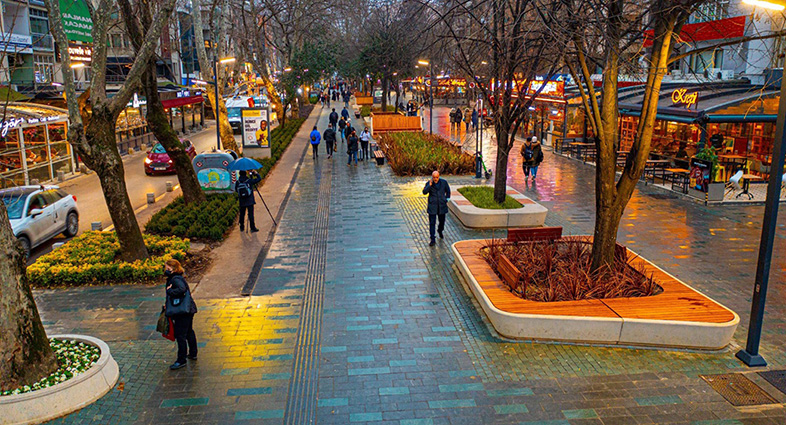
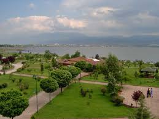
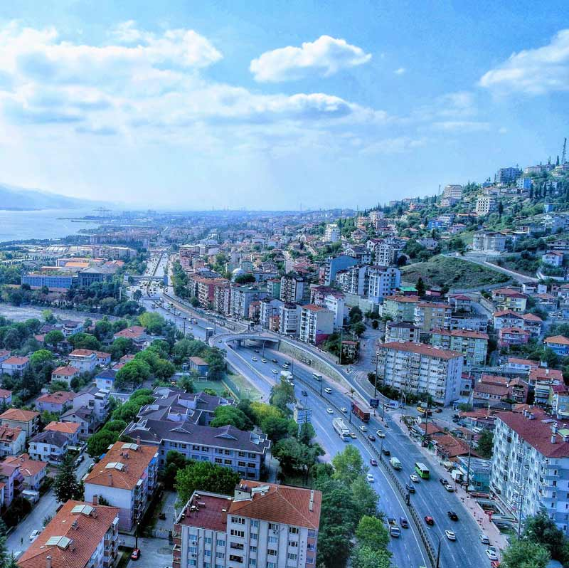
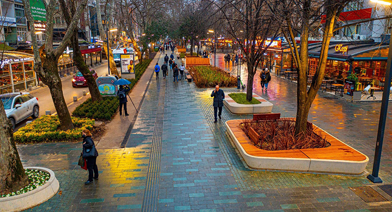
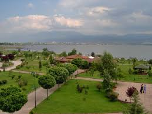
 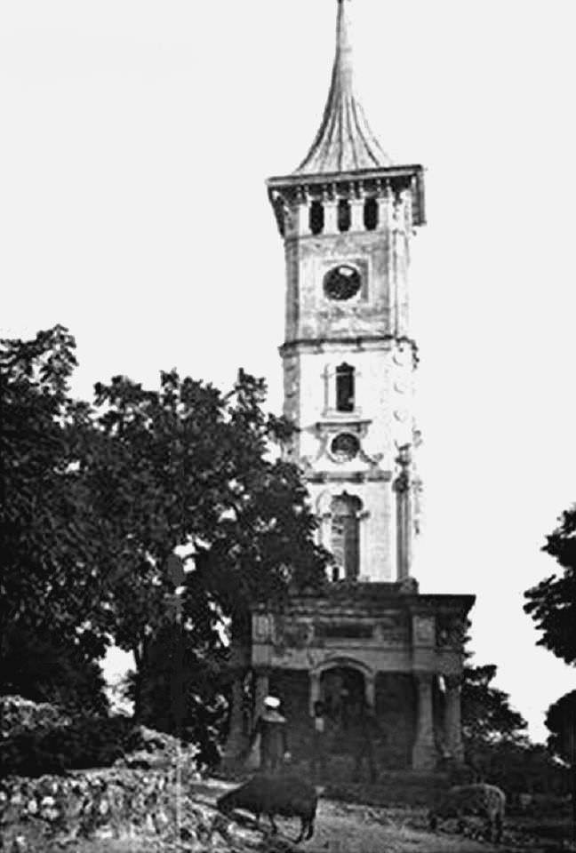
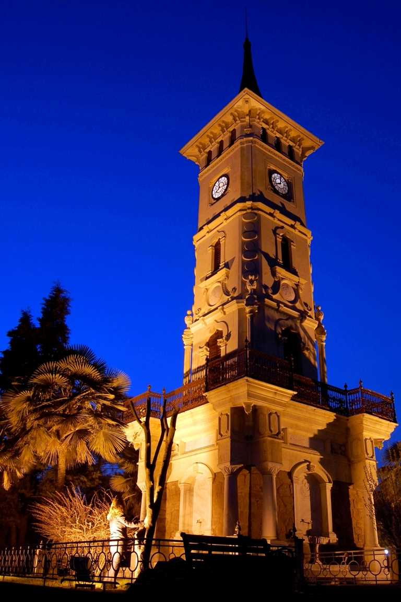
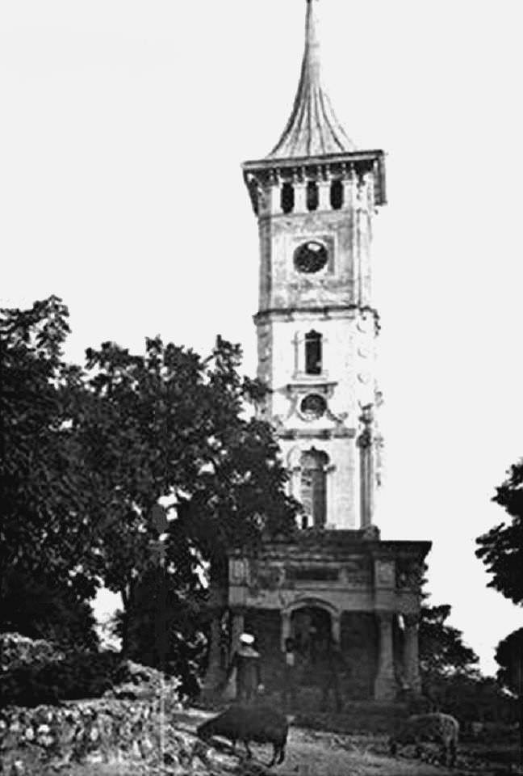
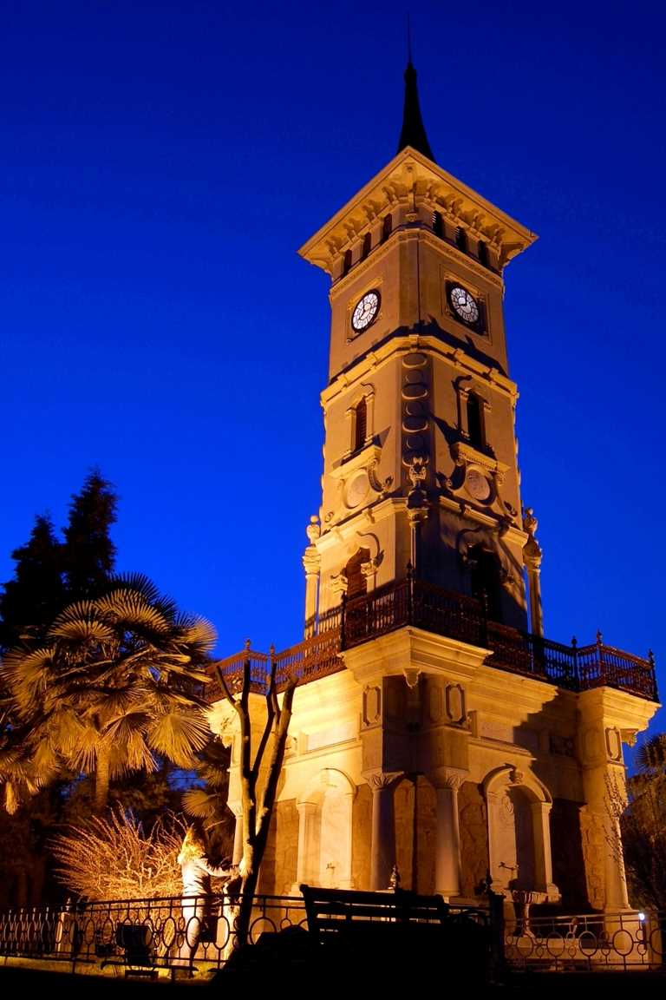
 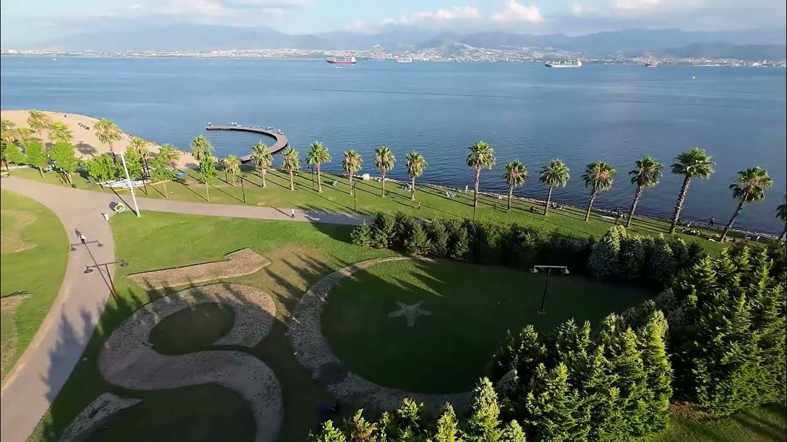
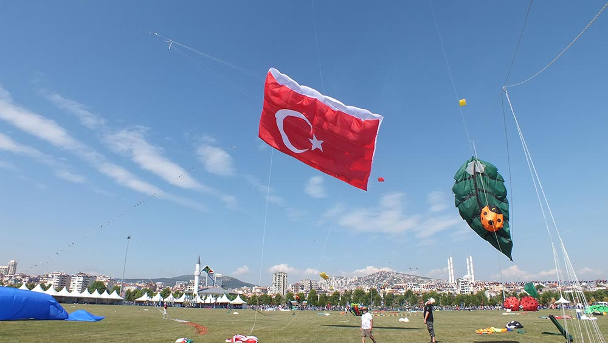
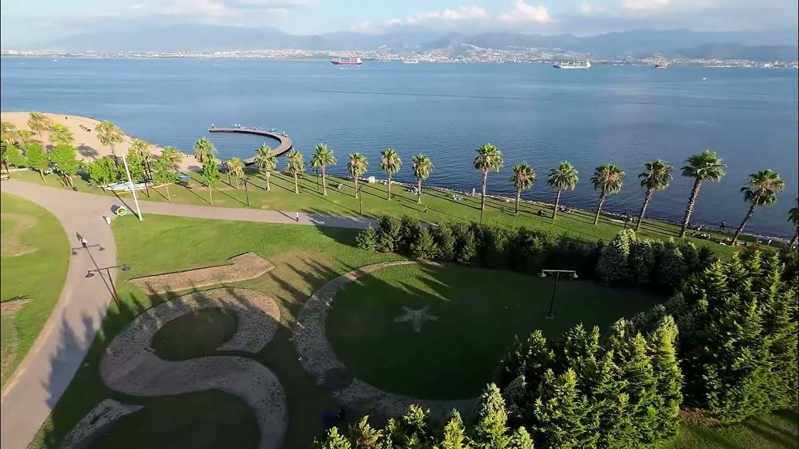
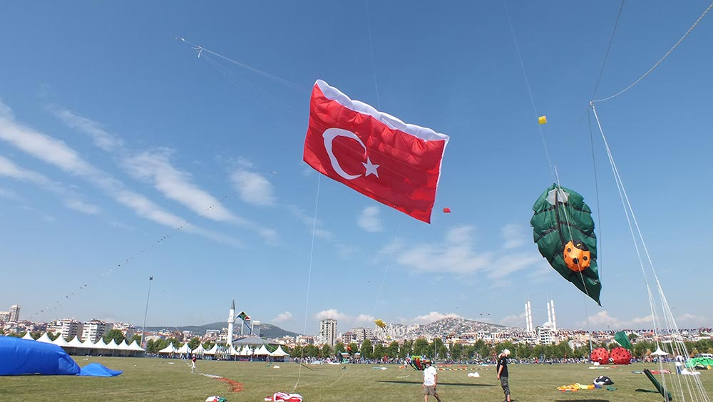